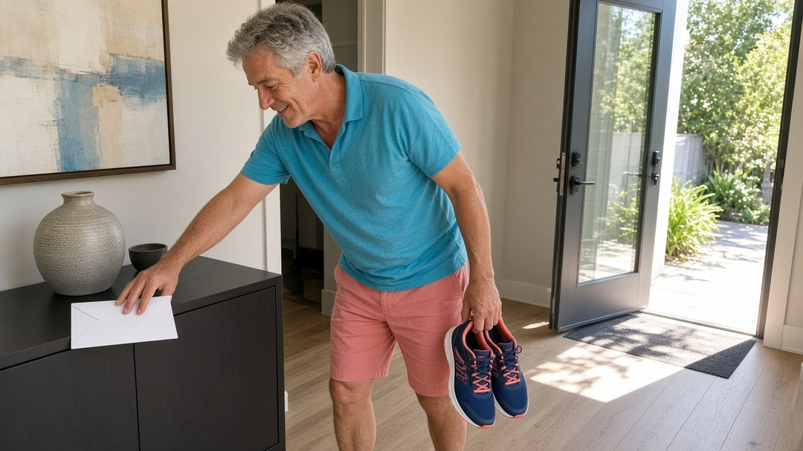

Po 50. roku życia często wraca pytanie, czy warto brać peptydy, i słychać, że odmładzają oraz budują mięśnie, a u mężczyzn mają przywracać testosteron, więc warto brać peptydy z internetu. Słowo „peptyd” to jednak tylko nazwa chemiczna, nie znak jakości. Pod tą samą etykietą mieszają się kolagen z żywności, leki GLP-1 na receptę i fiolki sprzedawane jako substancje „do badań”. Poniżej oddzielamy te trzy grupy i sprawdzamy, czego naprawdę dowodzą badania na ludziach.
Szybka odpowiedź
Czy warto brać peptydy po 50? Zależy od grupy: kolagen to białko z żywności, leki GLP-1 działają tylko z receptą, a fiolki „do badań”, takie jak BPC-157 czy TB-500, nie mają u ludzi mocnych dowodów, także na to, że przywracają testosteron na stałe. GIS i GIF ostrzegają: nie kupuj, nie stosuj, nie ryzykuj; mięśnie po pięćdziesiątce buduje raczej trening siłowy i białko z jedzenia.
Kluczowe wnioski
- „Peptyd” to nazwa chemiczna, nie obietnica efektu: kolagen, lek na receptę i fiolka „do badań” to trzy różne rzeczy.
- Dla BPC-157 przegląd z 2026 r. znalazł u ludzi tylko 3 małe badania, łącznie 30 osób, wszystkie słabej jakości.
- W Polsce GIS i GIF ostrzegają przed syntetycznymi peptydami sprzedawanymi jako odczynniki do badań: nie kupuj, nie stosuj, nie ryzykuj.
- Po 50. mięśnie buduje trening siłowy i białko z jedzenia; kolagen nie przewyższa pod tym względem serwatki ani białka z grochu.
Czy warto brać peptydy po 50?
Nie warto brać fiolki „do badań” w nadziei, że odmłodzi skórę i dobuduje mięśnie. Dla najgłośniejszych substancji z tej grupy, takich jak BPC-157, badania na ludziach są nieliczne i słabe. Kolagen z żywności to coś innego, a leki z grupy GLP-1 — na przykład semaglutyd — to zatwierdzone leki na receptę, które nie uwiarygadniają internetowej fiolki. Główny Inspektorat Sanitarny i Główny Inspektorat Farmaceutyczny mówią wprost: nie kupuj, nie stosuj, nie ryzykuj.
Poniżej nie ma instrukcji dawkowania ani adresów sklepów. Jest rozróżnienie trzech grup, tabela obietnic i dowodów, polskie ostrzeżenie urzędowe oraz to, co po 50. naprawdę pomaga utrzymać mięśnie: trening siłowy i białko, zwykle z jedzenia. Tekst ma charakter edukacyjny i nie zastępuje decyzji lekarza.
Jakie trzy grupy kryją się pod słowem „peptydy”?
Pod słowem „peptydy” kryją się co najmniej trzy różne rzeczy, których nie wolno wrzucać do jednego worka. Pierwsza grupa to peptydy kolagenowe, czyli rozdrobnione białko kolagenu w proszku lub żywności — typowy suplement, przyjmowany doustnie. Druga to leki peptydowe na receptę, przede wszystkim z grupy GLP-1, takie jak semaglutyd; to zatwierdzone leki, stosowane wyłącznie po decyzji lekarza. Trzecia to substancje sprzedawane jako „peptydy do badań”, zwykle w fiolkach, z dopiskiem że nie są przeznaczone do stosowania u ludzi: BPC-157, TB-500, CJC-1295, ipamorelina i podobne.
Obok tej trzeciej grupy w tych samych ofertach pojawia się czasem ibutamoren, znany jako MK-677. To nie jest peptyd, tylko doustny związek naśladujący grelinę, ale bywa sprzedawany w tym samym miejscu. Wspominamy go tylko jako tło, bez rozpisywania protokołów. Krem z peptydami to jeszcze inna historia: to, co smarujesz na skórę, nie działa jak zastrzyk i nie ustala dawki dla całej reszty organizmu. Semaglutyd z apteki, wydany na receptę, też niczego nie dowodzi o fiolce z napisem „wyłącznie do badań”.
Co obietnice mówią, a co pokazują badania na ludziach?
To, że coś zadziałało na komórkach albo na zwierzętach, jeszcze nie mówi, czy substancja pomaga człowiekowi po pięćdziesiątce i czy byłaby wtedy bezpieczna. Dla BPC-157, często obiecywanego „na ścięgna i stawy”, przegląd systematyczny Pooltona z października 2026 r. znalazł u ludzi tylko 3 badania, łącznie 30 osób: 16 w pracy retrospektywnej o kolanach, 12 w pilotażu zapalenia pęcherza i 2 w pilotażu bezpieczeństwa dożylnego. Wszystkie były słabej jakości, a pewność dowodów oceniono jako bardzo niską. Autorzy wnioskują, żeby nie stosować BPC-157 poza badaniami klinicznymi.
Wcześniejszy przegląd Vasireddiego z 2025 r. przejrzał 36 prac i znalazł 35 przedklinicznych oraz jedną kliniczną; autorzy napisali, że nie znaleziono klinicznych danych o bezpieczeństwie. Dla fragmentu tymozyny β4 sprzedawanego jako TB-500 amerykańska FDA stwierdziła, że nie zidentyfikowała żadnych danych o ekspozycji u ludzi. Badania kropli do oczu z pełną tymozyną β4 dotyczą innej cząsteczki i innego sposobu podania — nie przenosimy ich na zastrzyk „na regenerację”.
Substancje „na hormon wzrostu” potrafią podnieść GH i IGF-1, ale to nie to samo co większa siła. W dwuletnim badaniu ibutamorenu (MK-677) u osób w wieku 60–81 lat beztłuszczowa masa ciała wzrosła średnio o 1,1 kg wobec spadku o 0,5 kg w grupie placebo, bez poprawy siły ani sprawności; pogorszyła się wrażliwość na insulinę, a glukoza na czczo wzrosła o 0,3 mmol/l. W innym badaniu po złamaniu biodra program przerwano z powodu sygnału niewydolności serca. Kolagen może trochę dodać białka w diecie, ale u starszych kobiet i mężczyzn serwatka albo białko z grochu pobudzały syntezę białek mięśniowych, a kolagen nie.
| Obietnica | Co pokazują badania na ludziach | Źródło |
|---|---|---|
| BPC-157 leczy ścięgna, stawy i przyspiesza regenerację | 3 badania, łącznie 30 osób, wszystkie słabej jakości, pewność bardzo niska; nie stosować poza badaniami klinicznymi. Wcześniejszy przegląd nie znalazł klinicznych danych o bezpieczeństwie. | Poolton 2026; Vasireddi 2025 |
| TB-500 (fragment tymozyny β4) odbudowuje tkanki po kontuzji | FDA nie zidentyfikowała danych o ekspozycji tej substancji u ludzi. Wyników badań kropli do oczu z inną cząsteczką nie przenosimy na zastrzyk. | FDA, 22.04.2026 |
| Peptydy „na hormon wzrostu” budują siłę i masę po 50. | Ibutamoren (MK-677) — to nie peptyd, ale bywa sprzedawany obok — zwiększał beztłuszczową masę u osób 60–81 lat, bez poprawy siły; pogorszył cukier, a inne badanie przerwano z powodu sygnału niewydolności serca. | Nass 2008; Adunsky 2011 |
| Kolagen buduje mięśnie lepiej niż inne białko | Kolagen może być dodatkiem białka, ale serwatka i białko z grochu lepiej pobudzają syntezę białek mięśniowych u starszych osób. | Oikawa 2020; McKendry 2024 |
| Peptydy przywracają testosteron po 50. | W małych, krótkich badaniach diagnostycznych kisspeptyna podnosiła testosteron o około 15 procent na kilka godzin u 6 zdrowych mężczyzn (24,9 wobec 21,7 nmol/l). Nie ma badań nad siłą ani masą mięśni u mężczyzn 50+. Analogi GnRH po krótkim skoku mogą działać odwrotnie (ocena Badacza). | Dhillo 2005; Naveed 2026 |
Czy fiolka „do badań” jest legalna i czysta?
W Polsce „produkty do badań” i odczynniki chemiczne nie mają statusu produktu leczniczego i nie przeszły badań klinicznych potwierdzających bezpieczeństwo i skuteczność. Nie wolno ich sprzedawać w celach medycznych. Główny Inspektor Sanitarny i Główny Inspektor Farmaceutyczny ostrzegli 7 sierpnia 2025 r. przed kupowaniem i stosowaniem syntetycznych peptydów oferowanych w internecie jako odczynniki albo materiały „wyłącznie do badań”. Apel jest krótki: nie kupuj, nie stosuj, nie ryzykuj.
Oferowanie takich produktów do sprzedaży w opisany sposób jest w Polsce niezgodne z prawem i grozi odpowiedzialnością karną. Art. 124 Prawa farmaceutycznego dotyczy wprowadzania do obrotu produktu leczniczego bez pozwolenia, a nie — w świetle otwartego przepisu — samego prywatnego posiadania; tego drugiego nie rozstrzygamy tu jako pewnika. Napis „wyłącznie do badań” nie oznacza, że ktoś sprawdził zawartość fiolki tak, jak sprawdza się lek. W analizach peptydów z nielegalnych aptek internetowych czystość bywała niska (w części próbek z cysteiną od 5 do 75 procent deklarowanej substancji), a w niektórych znajdowano metale ciężkie. W próbkach semaglutydu kupionego bez recepty czystość była znacznie niższa od deklarowanej, a Health Canada ostrzegła w listopadzie 2026 r. przed nieautoryzowanymi peptydami, w tym zanieczyszczoną fiolką do wstrzykiwań. To nie jest osobny, recenzowany bilans czystości samego BPC-157 i TB-500.
Światowa Agencja Antydopingowa na Liście zabronionej 2026, obowiązującej od 1 stycznia 2026 r., umieszcza BPC-157 w grupie S0, TB-500 (jako pochodną tymozyny β4) w S2.3, a stymulatory hormonu wzrostu — w tym CJC-1295, ipamorelinę i ibutamoren — w S2. Zakaz obowiązuje zawsze, w zawodach i poza nimi. Kolagenu na tej liście nie ma. Wiadomość z USA z 30 października 2026 r. o tymczasowym odstąpieniu od egzekwowania przepisów wobec niektórych aptek recepturowych to nie legalizacja i nie zatwierdzenie leku; nie dotyczy też Polski. Komentarze do tej polityki zbierano do 13 listopada 2026 r., więc stan prawny za oceanem jeszcze może się zmienić.

Czy peptydy pomagają na siłowni i kto naprawdę powinien je brać?
Na siłowni często słychać, że fiolka „do badań” przyspieszy regenerację, dobuduje mięśnie albo — u facetów — sprawi, że hormony wrócą. Dla BPC-157 i TB-500 nie ma wiarygodnych badań na ludziach, które pokazywałyby przyrost siły albo szybszą regenerację po treningu. Kolagen może być dodatkiem białka, ale nie buduje mięśni lepiej niż serwatka czy białko z grochu.
Kisspeptyna potrafi na krótko podnieść LH i testosteron, ale w badaniu Dhillo z 2005 r. brało udział tylko 6 zdrowych mężczyzn: średni testosteron z 180 minut wyniósł 24,9 nmol/l wobec 21,7 nmol/l po soli fizjologicznej, czyli wzrost rzędu 15 procent, na kilka godzin. To nie jest odbudowa niedoboru u mężczyzny po pięćdziesiątce. W jeszcze mniejszym badaniu z 2026 r. (3 zdrowych mężczyzn) przy ciągłym wlewie LH najpierw silnie wzrosło, a potem spadło o 13–47 procent mimo trwania podawania; testosteron rósł umiarkowanie. Gonadorelina służy głównie do diagnostyki; według oceny Badacza pobudza oś hormonalną tylko przy podaniu pulsacyjnym. Analogi GnRH, takie jak triptorelina, po krótkim skoku potrafią wręcz wyłączyć produkcję testosteronu — tę odwrotność obietnicy „na testosteron” podajemy ostrożnie, jako ocenę mechanizmu, nie jako pewnik z badań u bywalców siłowni po pięćdziesiątce; status tych analogów w polskim rejestrze leków nie został tu potwierdzony. Osobno stoi hCG: to hormon pokrewny LH, a nie krótki peptyd, stosowany jako lek pod kontrolą lekarza. Kisspeptyny, gonadoreliny i jej analogów, a także hCG i LH, Lista WADA 2026 w grupie S2.2.1 zakazuje u mężczyzn zawsze. W zebranym materiale nie ma badań, które sprawdzałyby po kisspeptynie albo gonadorelinie siłę lub masę mięśni u mężczyzn po 50.
Brak dowodów: że peptydy przywracają testosteron po 50. na stałe albo że dają więcej siły i mięśni — badania kisspeptyny były małe, krótkie i robione u zdrowych mężczyzn, głównie jako test diagnostyczny. Brak dowodów: że BPC-157 albo TB-500 przyspieszają u ludzi przyrost mięśni i regenerację. Nieprawda: że kolagen buduje mięśnie lepiej niż inne białko — u starszych osób serwatka i białko z grochu pobudzały syntezę białek mięśniowych, a kolagen nie. Nieprawda: że „to naturalne, więc bezpieczne” — czystość fiolek z internetu bywa niepewna, a GIS i GIF ostrzegają, żeby takich produktów nie kupować i nie stosować. Nieprawda: że skoro ktoś sprzedaje fiolkę „do badań”, to stosowanie jej jako leku jest legalne — w Polsce obrót takimi substancjami w celach medycznych jest nielegalny.
Kto naprawdę powinien brać lek hormonalny, a nie fiolkę z internetu? Wytyczne Endocrine Society z 2018 r. zalecają rozpoznanie hipogonadyzmu tylko wtedy, gdy są objawy niedoboru i wielokrotnie potwierdzony niski poranny testosteron na czczo. Abstrakty wytycznych AUA z 2018 r. i EAU z 2025 r. też opierają ocenę na objawach oraz stężeniu testosteronu i na kontroli leczenia; nie cytujemy tu ich stron, bo pełnych tekstów nie otwierano. Leczeniem z dowodami jest testosteron na receptę (TRT) u mężczyzny z potwierdzonym niedoborem: metaanaliza Skinnera z 2018 r. pokazała wzrost beztłuszczowej masy i siły, a w badaniu Snyder z 2016 r. u mężczyzn 65+ korzyść dla funkcji seksualnych była umiarkowana, była pewna poprawa nastroju, natomiast autorzy nie stwierdzili korzyści dla witalności ani długości chodu. To leczenie niedoboru pod okiem lekarza, nie dopalacz dla zdrowego bywalca siłowni. Lek z grupy GLP-1 też jest tylko na receptę. W otwartych abstraktach tych wytycznych nie ma zalecenia, by niski testosteron leczyć kisspeptyną, gonadoreliną ani fiolką „do badań”. Dla zdrowego mężczyzny bez niedoboru zostaje to, o czym niżej: trening siłowy i białko.
Co zamiast fiolki buduje mięśnie po 50?
Zamiast fiolki z internetu po 50. zostaje to, co ma mocniejsze podstawy: regularny trening siłowy i odpowiednie białko, zwykle z jedzenia. WHO zaleca ćwiczenia wzmacniające mięśnie we wszystkich grupach wieku. Eksperci PROT-AGE i ESPEN piszą o osobach starszych, głównie 65+, i podają orientacyjnie 1,0–1,2 g białka na kilogram masy ciała dziennie u zdrowych seniorów; przy chorobie lub niedożywieniu bywa więcej, a wyjątkiem jest ciężka choroba nerek. Dla osób 50–64 lat traktujemy te liczby jako wskazówkę, nie jako osobną normę wyznaczoną właśnie dla tej dekady życia.
Kolagen może uzupełnić pulę białka, ale nie przebija serwatki ani białka roślinnego, gdy chodzi o pobudzanie syntezy białek mięśniowych. Jeśli lekarz przepisał lek z grupy GLP-1, to nadal jest leczenie na receptę, a nie argument za kupnem „odczynnika do badań”. Wtedy o mięśnie i białko warto zadbać razem z lekarzem, a nie dokładając na własną rękę fiolki z sieci.
Najczęściej zadawane pytania
Czy warto brać peptydy?
Zależy, co stoi za tą nazwą. Kolagen z żywności to zwykłe białko, leki GLP-1 działają tylko na receptę, a fiolki „do badań” nie mają u ludzi mocnych dowodów na odmładzanie czy budowę mięśni. GIS i GIF ostrzegają, żeby takich produktów nie kupować i nie stosować. Po 50. pewniejszą drogą jest trening siłowy i białko z jedzenia.
Czy peptydy to sterydy?
Nie. Peptyd to krótki łańcuch aminokwasów, a sterydy anaboliczne to inna klasa substancji. Pod szyldem „peptydów” i tak mieszają się trzy różne grupy, więc samo powiedzenie „to nie sterydy” jeszcze niczego nie czyni bezpiecznym. Fiolka „do badań” nadal nie jest dopuszczonym lekiem.
Czy peptydy są bezpieczne?
Nie da się odpowiedzieć jedną oceną dla wszystkich. Kolagen spożywczy jest zwykłą żywnością. Zatwierdzony lek na receptę ma znany profil korzyści i działań niepożądanych, który ocenia lekarz. Syntetyczne peptydy sprzedawane jako odczynniki do badań nie przeszły takich badań klinicznych; GIS i GIF ostrzegają, że mogą mieć nieznany, nawet szkodliwy wpływ.
Peptydy skutki uboczne?
Skutki zależą od grupy. Przy fiolkach „do badań” dochodzi niepewna zawartość, ryzyko zakażenia przy samodzielnych zastrzykach i brak rzetelnych danych klinicznych; przy substancjach „na hormon wzrostu” u starszych osób opisano pogorszenie cukru, a jedno badanie ibutamorenu przerwano z powodu sygnału niewydolności serca. Działania niepożądane leków GLP-1 omawia się z lekarzem prowadzącym, nie na podstawie oferty z internetu.
Peptydy na masę mięśniową?
Nie ma mocnych dowodów, że fiolka „do badań” buduje siłę po 50. Ibutamoren, który peptydem nie jest, zwiększał beztłuszczową masę u osób 60–81 lat, ale bez poprawy siły, i pogarszał gospodarkę cukrową. Kolagen nie pobudza syntezy białek mięśniowych tak jak serwatka albo białko z grochu. Na masę mięśniową po 50. zostaje trening siłowy i białko z diety.
Peptydy na regenerację?
Obietnica regeneracji ścięgien i stawów opiera się głównie na badaniach na zwierzętach. Dla BPC-157 u ludzi są tylko trzy małe, słabe badania na 30 osobach. Dla TB-500 FDA nie wskazała danych o ekspozycji u ludzi. To za mało, by traktować fiolkę jako sprawdzony środek na regenerację po 50.
Czy peptydy są legalne?
Kolagen jako żywność i leki na receptę mają jasny status. Sprzedaż syntetycznych peptydów „do badań” w celach medycznych jest w Polsce nielegalna; art. 124 Prawa farmaceutycznego dotyczy obrotu bez pozwolenia. W sporcie BPC-157, TB-500 i stymulatory hormonu wzrostu są na liście WADA 2026 zakazane zawsze. Tymczasowe zasady z USA nie legalizują tych substancji i nie obowiązują w Polsce.
Źródła
- Poolton i in. (Acta Orthop Belg, 08.10.2026): przegląd systematyczny BPC-157; 3 badania u ludzi, łącznie n=30, wszystkie słabej jakości, pewność bardzo niska; nie stosować poza badaniami klinicznymi. PubMed HTTP 203 w dniu sprawdzenia, stąd requires_local_verification.
- Vasireddi i in. (HSS J, 31.07.2025): przegląd systematyczny BPC-157; 36 prac, 35 przedklinicznych, 1 kliniczna; „No clinical safety data were found.” PubMed HTTP 203, requires_local_verification.
- FDA, Certain bulk drug substances that may present significant safety risks (stan strony 22.04.2026): dla fragmentu tymozyny β4 (TB-500) brak zidentyfikowanych danych o ekspozycji u ludzi; opisy ryzyka jakości i immunogenności dla substancji nominowanych do sporządzania recepturowego.
- GIS i GIF, ostrzeżenie publiczne 07.08.2025: syntetyczne peptydy sprzedawane jako odczynniki lub „do badań” nie mają statusu produktu leczniczego; „Nie kupuj. Nie stosuj. Nie ryzykuj.” Fallback: strona GIF z tym samym komunikatem.
- Nass i in. (Ann Intern Med, 04.11.2008): RCT ibutamorenu (MK-677) u osób 60–81 lat, 2 lata, n=65; beztłuszczowa masa +1,1 kg vs −0,5 kg, bez poprawy siły, gorsza wrażliwość na insulinę, glukoza na czczo +0,3 mmol/l. PubMed HTTP 203, requires_local_verification.
- Adunsky i in. (Arch Gerontol Geriatr, 2011): RCT MK-677 po złamaniu biodra, n=123; badanie przerwano z powodu sygnału niewydolności serca. PubMed HTTP 203, requires_local_verification.
- Janvier i in. (Talanta, 2018): 10 często fałszowanych peptydów z nielegalnych aptek internetowych; czystość 5–75% dla peptydów z cysteiną, w części próbek arsen, w jednej ołów. To nie jest osobny bilans czystości samego BPC-157 i TB-500. PubMed HTTP 203, requires_local_verification.
- Ashraf i in. (JMIR, 07.11.2024): semaglutyd kupiony bez recepty — czystość 7,7–14,4% zamiast deklarowanych 99%, endotoksyny we fiolkach. PubMed HTTP 203, requires_local_verification.
- Health Canada, ostrzeżenie 12.11.2026: nieautoryzowane peptydy, w tym zanieczyszczona fiolka do wstrzykiwań (m.in. mieszanka z BPC-157, TB-500, GHK-Cu). Host poza allowistą §26.
- Bauer i in. (JAMDA, 2013), stanowisko PROT-AGE: u osób starszych (głównie 65+) co najmniej 1,0–1,2 g białka/kg/dzień u zdrowych; grupy nie wyznaczały osobnej normy dokładnie dla 50–64 lat. PubMed HTTP 203, requires_local_verification.
- Deutz i in. (Clin Nutr, 2014), wytyczne ESPEN: zdrowi starsi 1,0–1,2 g białka/kg/dzień, chorzy lub niedożywieni 1,2–1,5 g/kg, plus aktywność w tym trening oporowy. PubMed HTTP 203, requires_local_verification.
- WHO 2020, guidelines on physical activity and sedentary behaviour (Bull i in.): regularne ćwiczenia wzmacniające mięśnie we wszystkich grupach wieku. Kanoniczna strona WHO, HTTP 200.
- Oikawa i in. (Am J Clin Nutr, 2020): u starszych kobiet serwatka zwiększała syntezę białek mięśniowych, kolagen nie. PubMed HTTP 203; pełny tekst bywał w PMC7049534, w ponownym pobraniu pojawiała się blokada, stąd requires_local_verification. Fallback PMC.
- McKendry i in. (Am J Clin Nutr, 2024): u starszych mężczyzn serwatka i białko z grochu pobudzały syntezę białek mięśniowych, kolagen nie. PubMed HTTP 203; fallback PMC11291473. Requires_local_verification.
- Ustawa Prawo farmaceutyczne, tekst jednolity Dz.U. 2026 poz. 612: art. 124 — wprowadzanie do obrotu produktu leczniczego bez pozwolenia (grzywna, ograniczenie wolności albo pozbawienie wolności do 2 lat). Kara dotyczy obrotu, nie jest tu czytana jako zakaz samego prywatnego posiadania.
- EMA, EPAR Wegovy (semaglutyd): dopuszczony w UE lek na receptę z grupy GLP-1. Strona leku HTTP 200. Nie rozwijamy tu odchudzania ani sporów o ubytek mięśni.
- WADA Prohibited List 2026 (PDF, wrzesień 2025; lista obowiązuje od 01.01.2026): BPC-157 w S0, TB-500 (pochodne tymozyny β4) w S2.3, stymulatory GH (CJC-1295, ipamorelina, ibutamoren) w S2; w S2.2.1 u mężczyzn zawsze zakazane są m.in. hCG (CG), LH, GnRH (gonadorelina) i analogi agonistyczne (w tym triptorelina) oraz kisspeptyna i jej analogi. Kolagenu na liście nie ma. Host poza allowistą §26. HTTP 200 przy ponownym pobraniu PDF.
- Federal Register 2026-22192, 30.10.2026: tymczasowa polityka odstąpienia od egzekwowania wobec aptek recepturowych (m.in. BPC-157, TB-500) pod warunkami; to nie legalizacja ani zatwierdzenie leku. Host poza allowistą §26. Komentarze zbierano do 13.11.2026.
- Dhillo i in. (JCEM, grudzień 2005): podwójnie zaślepione, kontrolowane placebo badanie krzyżowe kisspeptyny-54 u 6 zdrowych mężczyzn; średni testosteron z 180 min 24,9 ± 1,7 vs 21,7 ± 2,2 nmol/l po soli fizjologicznej. PubMed HTTP 203, requires_local_verification.
- Naveed/Seminara (Hormones Athens, 02.06.2026): ciągły wlew kisspeptyny-10 przez 24 h u 3 zdrowych mężczyzn; LH wzrosło 5–8×, potem spadło o 13–47% mimo trwania wlewu; FSH i testosteron „rose modestly”. PubMed HTTP 203, requires_local_verification.
- Bhasin i in., wytyczne Endocrine Society (JCEM, 01.05.2018): rozpoznanie hipogonadyzmu tylko przy objawach zgodnych z niedoborem i jednoznacznie, powtórnie niskim stężeniu testosteronu; poranny testosteron całkowity na czczo, potwierdzony kolejnym pomiarem. PubMed HTTP 203, requires_local_verification.
- Mulhall i in., wytyczne AUA (J Urol, 2018): ocena niedoboru testosteronu na podstawie stężenia całkowitego, objawów i cech oraz kontrola leczenia. Cytowane wyłącznie z abstraktu PubMed, bez stron pełnego tekstu. PubMed HTTP 203, requires_local_verification.
- Salonia i in., wytyczne EAU 2025 (Eur Urol, lipiec 2025): właściwe wskazania i dalsza kontrola terapii testosteronem w późno ujawniającym się hipogonadyzmie (LOH). Cytowane wyłącznie z abstraktu PubMed, bez stron pełnego tekstu. PubMed HTTP 203, requires_local_verification.
- Skinner i in. (J Cachexia Sarcopenia Muscle, 2018): metaanaliza RCT — TRT zwiększa beztłuszczową masę i siłę u mężczyzn w średnim i starszym wieku; efekt mocniejszy przy podaniu domięśniowym niż przezskórnym. PubMed HTTP 203, requires_local_verification.
- Snyder i in., Testosterone Trials (NEJM, 18.02.2016): 790 mężczyzn 65+ z testosteronem <275 ng/dl; po roku umiarkowana korzyść dla funkcji seksualnych, pewna dla nastroju; we wniosku autorów brak korzyści dla witalności i długości chodu. PubMed HTTP 203, requires_local_verification.
- Rainer i in. (Cureus, 10.06.2022): hCG jest homologiem LH. Źródło użyte tylko do tego rozróżnienia chemicznego, nie do wyników małej retrospekcji n=28. PubMed HTTP 203, requires_local_verification.
Uwaga: Artykuł ma charakter informacyjny i edukacyjny. Nie zastępuje konsultacji lekarskiej, diagnozy ani leczenia.